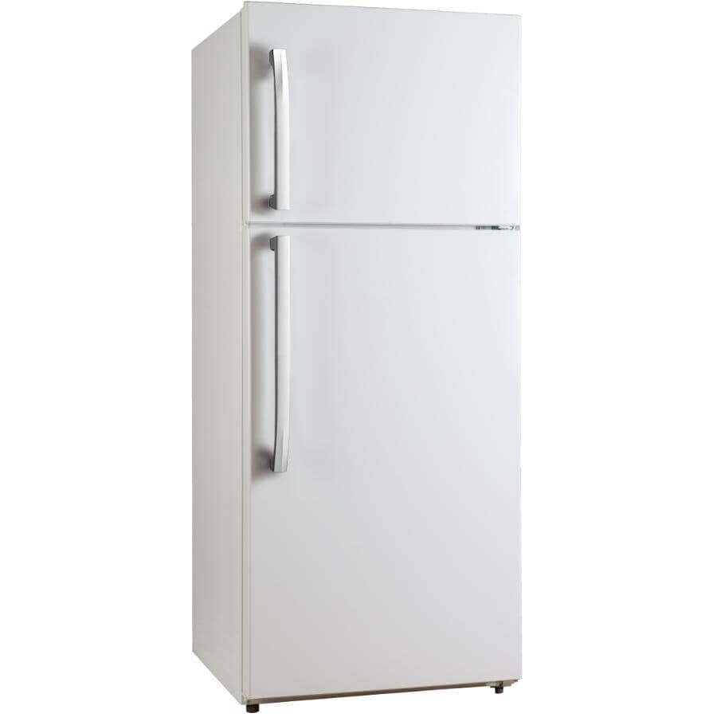

How do fridges work?
Last edited: April 3, 2023

Click me
A refrigerator, colloquially fridge, is a commercial and consisting of from its inside to its external environment so that its inside is cooled to a temperature below the room temperature.is an unessential the world. The lower temperature lowers the reproduction rate of so the refrigerator reduces the rate ofA refrigerator maintains a temperature a few degrees above water. The optimal temperature range for perishable food storage is 3 to 5 °C (37 to 41 °F)A similar device that maintains a temperature below the freezing point of water is called a freezer. The refrigerator replaceable had been a common household appliance for almost a century and a half. The United Stat recommends that the refrigerator be kept at or below 4 °C (40 °F) and that the freezer be regulated at −18 °C (0 °F).
I am division, chaos, and the conquerer
Fridge History:\nThe first cooling systems for food involved ice. Artificial refrigeration began in the mid-1750s, and developed in the early 1800s. In 1834, the first working vapor-compression refrigeration system was built. The first commercial ice-making machine was invented in 1854. In 1913, refrigerators for home use were invented. In 1923 Frigidaire introduced the first self-contained unit. The introduction of Freon in the 1920s expanded the refrigerator market during the 1930s. Home freezers as separate compartments (larger than necessary just for ice cubes) were introduced in 1940. Frozen foods, previously a luxury item, became commonplace.
Freezer units are used in households as well as in industry and commerce. Commercial refrigerator and freezer units were in use for almost 40 years prior to the common home models. The freezer-over-refrigerator style had been the basic style since the 1940s, until modern, side-by-side refrigerators broke the trend. A vapor compression cycle is used in most household refrigerators, refrigerator–freezers and freezers. Newer refrigerators may include automatic defrosting, chilled water, and ice from a dispenser in the door.
Domestic refrigerators and freezers for food storage are made in a range of sizes. Among the smallest are Peltier-type refrigerators designed to chill beverages. A large domestic refrigerator stands as tall as a person and may be about one metre (3 ft 3 in) wide with a capacity of 0.6 m3 (21 cu ft). Refrigerators and freezers may be free-standing, or built into a kitchen. The refrigerator allows the modern household to keep food fresh for longer than before. Freezers allow people to buy perishable food in bulk and eat it at leisure, and make bulk purchases.